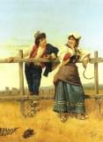

14 dicembre festa degli agricoltori
|
14 dicembre festa degli agricoltori |
|  |
Il
14 dicembre nella chiesetta di S. Matroniano in Sesto Ulteriano, costruita
nel 1939 dal Sig. Crespi, si celebra la festa di questo Santo protettore
degli agricoltori. In tale ricorrenza la gente dei campi devota a S. Matroniano
si reca in questa piccola chiesetta per chiedere protezione ed abbondanza
di raccolti. La sera è pure tradizione mangiare nelle trattorie
locali polenta e selvaggina. Per chi ormai non ricorda più la storia
antica di Sesto Ulteriano è utile rammentare che un tempo era difficile
poter arrivare in questa zona, in quanto era tutt'attorno bosco selvaggio
ed i cacciatori si avventuravano per fare bottino di selvaggina. Ecco
la vera ragione per cui oggi si tramanda questa antica usanza. |
|
o |

sito di propriet� dell'Associazione Culturale Zivido
pierino.esposti@gmail.com